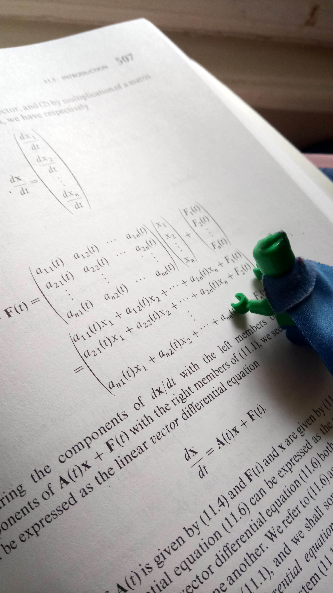

Kedvencek
 Az univerzum őrzése folyamatos, megterhelő feladat. A munka egy nagy előnye, hogy idegen, korábban ismeretlen tájak felfedezésére ad lehetőséget, melyek egy-egy szabadnap eltöltéséhez adhatnak ötletet. Rövidebb hétvégi kikapcsolódáshoz számomra a Luzern Zűrtornya a Barandon bolygón. Jató rémuralma alatt halálsugarat terveztek a toronyba építeni, mely munkálatokat sikerült megakadályozni, így ma turista látványosságként üzemel. Kiemelkedő mérete mellett jellegzetessége, hogy megszokott liftzene helyett pszichedelikus zene szól a felfele vezető lift út alatt, illetve a lépcsőházakban is. Leggyakoribb: https://www.youtube.com/watch?v=ShdX3tkflFE
Az univerzum őrzése folyamatos, megterhelő feladat. A munka egy nagy előnye, hogy idegen, korábban ismeretlen tájak felfedezésére ad lehetőséget, melyek egy-egy szabadnap eltöltéséhez adhatnak ötletet. Rövidebb hétvégi kikapcsolódáshoz számomra a Luzern Zűrtornya a Barandon bolygón. Jató rémuralma alatt halálsugarat terveztek a toronyba építeni, mely munkálatokat sikerült megakadályozni, így ma turista látványosságként üzemel. Kiemelkedő mérete mellett jellegzetessége, hogy megszokott liftzene helyett pszichedelikus zene szól a felfele vezető lift út alatt, illetve a lépcsőházakban is. Leggyakoribb: https://www.youtube.com/watch?v=ShdX3tkflFE
Apró marsi tojás korom óta szeretek kisebb - nagyobb kütyüket szerelni. Ez időről-időre kapóra is jött, így hobbiból a munkám részévé nőtte ki magát, és ezzel a feladatok komolyodása is együtt járt. A fejlesztések folyamatos kutatást igényelnek. Amúgy sincs semmi szórakoztatóbb egy hosszú út során, mint egy jó kis differenciálegyenlet megoldása.
 Minden szuperhősnek szüksége van egy erődre. Viszont ritkán hangoztatják, hogy huzamosabb idő után a magány erődjéből a magányosságé lesz. A barátság legjobb magja egy igazi mag. Egyik dolgot követi a másik és a magány hátsóudvara a magány dzsungelévé alakul. Az általam legkedveltebb dzsungelalapanyagok eredet szerinti sorban:
Minden szuperhősnek szüksége van egy erődre. Viszont ritkán hangoztatják, hogy huzamosabb idő után a magány erődjéből a magányosságé lesz. A barátság legjobb magja egy igazi mag. Egyik dolgot követi a másik és a magány hátsóudvara a magány dzsungelévé alakul. Az általam legkedveltebb dzsungelalapanyagok eredet szerinti sorban:
| Mangó bokor |
Laver |
10-20m |
| Borágófa |
Mars |
50-60m |
| Borágófa |
Laver |
20-30m |
A magányos búvóhelyek, főhadiszállások nem csak a kikapcsolódó szuperhősök hobbija. A sűrű sötét erdők rejtekén számos gonosztevő hajléka is húzódik.
Egy ilyen helyen akadtam össze először Star Lorddal.
Ekkor gorillákat képzett ki, hogy az emberek közé beépülve kémkedjenek. A tervet sikerült megállítani, illetve az eset több film alapjául is szolgált. Alább látható egy, melyben az eredeti akció gorillái is szerepel néhány.
https://www.youtube.com/watch?v=2a2SOuVYgjY